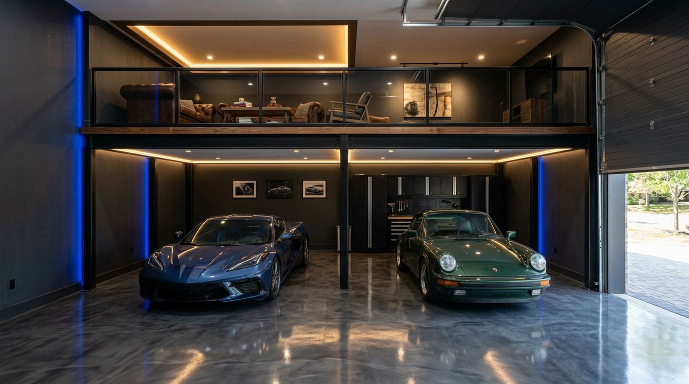

Garage Condos in Minnesota: 2026 Market Guide

If you had to pick one state that defines the modern car condo, it would be Minnesota. AutoMotorPlex in Chanhassen helped pioneer the whole concept in the late 2000s, proving that car people would buy deeded garage space the way they buy lake cabins, and the Twin Cities have been building on that blueprint ever since. The AutomotiveCondos.com directory currently tracks 28 garage condo communities in Minnesota with more than 2,227 known units, which makes it the largest state in the directory by unit count, bigger than Michigan, Texas, or Arizona. This guide covers the entire market: the communities, the real 2026 sale prices, the massive Park Place network, and what to know before you buy.
You can browse every community on the full Minnesota directory or explore them geographically on the interactive map. New to the concept entirely? Read what is a car condo first, then come back for the Minnesota specifics.
The Minnesota Garage Condo Market at a Glance
Here is the November 2026 snapshot from the AutomotiveCondos.com directory:
- 28 communities tracked statewide, concentrated in the Twin Cities metro but reaching Rochester, the Brainerd Lakes, Alexandria, and even Warroad near the Canadian border
- 2,227+ known units, the most of any state in the directory
- 20 communities actively selling new or developer-held units
- 2 communities under construction and 3 more in the planning stage, so the pipeline is still growing
- Only 3 communities fully sold out and limited to resales, a sign of how fast developers have been adding supply
- Real 2026 sale prices from $45,000 at the entry level to $861,000 at the top of the market
What makes Minnesota different from every other garage condo state is scale per community. The average Minnesota community in the directory is roughly twice the size of the average Michigan community. Developers here build campuses, not buildings: Park Place Storage in Minnetrista alone has 369 units, and four communities in the state top 140 units each. That scale exists because Minnesota demand is structural. The state has one of the highest boat-ownership rates in the country, a six-month winter, an enormous snowmobile and ice-house culture, and suburbs that increasingly prohibit outdoor storage of trailers and RVs. Every one of those pressures funnels buyers toward heated, deeded storage.
AutoMotorPlex: Where the Minnesota Market Started
Any Minnesota buyer should understand the AutoMotorPlex story, because it set the template for everything that followed. The original AutoMotorPlex Chanhassen campus opened in the late 2000s as one of the first large-scale car condo communities in the Midwest, combining private deeded garages with a clubhouse culture, cars-and-coffee events that draw thousands, and an owner base of serious collectors. Chanhassen is long sold out and now trades resale only, with units appearing on the market infrequently and selling to a waiting audience. Its sibling campus, AutoMotorPlex Medina, carried the concept to the west metro and is currently selling Phase 3, one of the few chances in the state to buy new construction inside an established enthusiast campus rather than a pure storage development.
The distinction matters when you shop. AutoMotorPlex-style communities are social ecosystems where owners finish units with mezzanines, lounges, and lifts, and where the event calendar is part of what you are buying. Most of the rest of the Minnesota market is high-quality storage first, community second. Neither is better, but they are different products at different price points, and you should know which one you are buying.
The Park Place Network: 834 Units Across Four Campuses
The single biggest force in Minnesota garage condos today is Park Place Storage, with four actively selling campuses that together account for 834 units, more than a third of all known units in the state:
- Park Place Minnetrista: 369 units, 2026 sales from $195,000 to $450,000, serving the Lake Minnetonka west shore
- Park Place Prior Lake: 191 units, 2026 sales from $112,000 to $324,000
- Park Place Corcoran: 189 units, 2026 sales from $135,000 to $327,000
- Park Place Woodbury: 85 units, 2026 sales from $118,000 to $410,000, the network's east metro foothold
The Park Place playbook is straightforward: large campuses ringing the metro, a wide range of unit sizes in each, and enough volume that there is almost always something for sale. For buyers, that volume is useful in two ways. It keeps entry pricing honest (you can still get into Prior Lake or Woodbury under $120,000), and it produces real comparable sales data, which is rare in this asset class. The 2026 trade ranges above are actual recorded sales from the AutomotiveCondos.com directory, not asking prices.
The Rest of the Twin Cities Metro
West metro
Beyond AutoMotorPlex and the Minnetrista and Corcoran campuses, the west metro includes Motor Condos at Independence (18 units, selling), Orono Garage Condos (85 units, selling) near Lake Minnetonka's north shore, and a growing Delano cluster with West End Autoplex (44 units, selling) and the planned 41-unit Caves of Delano. The west metro is the premium side of town, tracking the Lake Minnetonka wealth belt, and it holds the deepest concentration of enthusiast-grade communities in the state.
South metro
The south metro is the volume play. Midwest FlexSpace Lakeville is under construction with 98 units from $185,000, next door to the sold-out Brink 4 Luxury Condos (59 units, resales $283,000 to $345,000), a useful snapshot of how Lakeville units season in value. Eagan Condo Garages offers 73 units at $190,000 to $250,000, Midwest FlexSpace Rosemount lists 67 units around $195,000, Valley View in Jordan runs $300,000 to $340,000, and Prior Lake adds the sold-out 60-unit Mesenbrink Storage Condos (resales around $275,000) alongside the Park Place campus.
North and east metro
North of the river, The Hideout in St. Michael is one of the state's marquee projects: 140 units around $345,000, pitched at the enthusiast buyer who wants AutoMotorPlex energy with new construction. Condo Suites Otsego adds 124 units, Big Lake Car Condos prices transparently from $169 per square foot, and the planned 20-unit Toy Box Albertville extends the I-94 northwest corridor. On the east side, Garage Solution Condominiums in Columbus is the top of the market, 148 units with 2026 sales from $250,000 all the way to $861,000, the highest recorded garage condo sale in Minnesota this year. Midwest FlexSpace White Bear Lake (60 units, $195,000 to $250,000) and the under-construction Points North Garage Condos in Forest Lake round out the northeast.
Greater Minnesota: Lakes, Tracks, and the Far North
Five communities sit outside the metro, and each tells you something about why this market works. Stor Smart North in Carlos, just north of Alexandria, is the second-largest community in the state at 238 units, with 2026 sales spanning $45,000 to $318,000, the widest range in the directory and proof that lake country storage scales. Roadhouse Motor Condos brings 32 units to Rochester's growing economy. BIR Luxury Garages is a planned 12-unit project at Brainerd International Raceway, Minnesota's first true trackside garage condo play. 404 Garage Condos in Sauk Rapids ($256,000 to $340,000) serves the St. Cloud corridor, and Upper Midwest Man Caves in Warroad, 30 units within sight of the Canadian border, exists for exactly the reasons you would guess: snowmobiles, fish houses, and Lake of the Woods boats.
Notable Minnesota Communities: Status and Pricing
Ten of the most significant communities from the full Minnesota directory, with current status and the best available pricing data:
| Community | City | Status | Units | Pricing |
|---|---|---|---|---|
| Park Place Storage – Minnetrista | Minnetrista | Selling | 369 | 2026 sales $195K–$450K |
| Stor Smart North | Carlos (Alexandria area) | Selling | 238 | 2026 sales $45K–$318K |
| Park Place Storage – Prior Lake | Prior Lake | Selling | 191 | 2026 sales $112K–$324K |
| Park Place Storage – Corcoran | Corcoran | Selling | 189 | 2026 sales $135K–$327K |
| Garage Solution Condominiums | Columbus | Selling | 148 | 2026 sales $250K–$861K |
| The Hideout | St. Michael | Selling | 140 | ~$345K |
| Midwest FlexSpace Lakeville | Lakeville | Under construction | 98 | From $185K |
| AutoMotorPlex Medina | Medina | Selling | – | Phase 3 selling |
| AutoMotorPlex Chanhassen | Chanhassen | Resale only | – | Resales; inquire |
| Brink 4 Luxury Condos | Lakeville | Resale only | 59 | Resales $283K–$345K |
What Garage Condos Cost in Minnesota
Minnesota has the richest sales data of any state in the AutomotiveCondos.com directory, because so many large communities recorded trades in 2026. The ladder looks like this:
- Entry tier ($45,000 to $135,000): Smaller units in high-volume campuses, mostly outside the core metro or in the biggest developments. Stor Smart North starts at $45,000, Park Place Prior Lake at $112,000, Park Place Woodbury at $118,000.
- Mid tier ($135,000 to $300,000): The bulk of the market. New construction at Midwest FlexSpace Lakeville from $185,000, Big Lake from $169 per square foot, Eagan at $190,000 to $250,000, White Bear Lake and Rosemount around $195,000 to $250,000, Mesenbrink resales near $275,000.
- Premium tier ($300,000 to $450,000): Large, finished, or enthusiast-grade units. The Hideout around $345,000, Valley View Jordan at $300,000 to $340,000, Brink 4 resales to $345,000, the top of Park Place Minnetrista at $450,000.
- Trophy tier ($450,000 to $861,000): The top of Garage Solution Columbus, where 2026 sales reached $861,000 for large, highly finished units, plus the best AutoMotorPlex resales when they surface.
Remember that the purchase price is only the start: dues, taxes, insurance, and build-out (heat, floor coatings, mezzanines, bathrooms, lifts) all add to the real cost of ownership. Our cost guide breaks down every line item.
Supply Pipeline: A Market Still in Growth Mode
Twenty of 28 communities actively selling is an unusually open market. In Michigan or Arizona, many of the best communities are sold out and you are stuck hunting resales; in Minnesota, developer inventory still exists at nearly every price point, and the pipeline (Midwest FlexSpace Lakeville and Points North under construction; BIR, Caves of Delano, and Toy Box Albertville planned) keeps adding more. The practical consequence for buyers: you have negotiating room and selection in Minnesota that barely exists elsewhere, but you should also underwrite resale value carefully in submarkets where a developer is still selling new units down the street. The sold-out communities, Chanhassen, Brink 4, and Mesenbrink, are where scarcity pricing has already set in.
If you already own a Minnesota unit, that same buyer traffic works in your favor: list your unit on AutomotiveCondos.com to reach buyers searching your exact community.
Buying a Garage Condo in Minnesota: What to Check
The mechanics are standard condominium ownership: deeded unit, association dues, property taxes, recorded declaration and bylaws. Minnesota-specific items to verify before you sign:
- Heat and insulation are non-negotiable. A Minnesota winter is the entire reason this market exists. Confirm in-floor heat versus hanging units, insulation values, and who pays for gas, because utility structure varies by community.
- Floor drains and wash bays. You will drag in half a parking lot of salt and slush every winter. In-unit drains or a shared wash bay dramatically change daily usability.
- Association use rules. Some communities allow lounges, mezzanines, and regular hangout use; others are storage-only and restrict plumbing or occupancy. Match the rules to how you will actually use the space.
- Door and bay dimensions. Wake boats, fifth wheels, and Class A coaches need 14-foot doors and 45 to 50 feet of depth. Measure your rig with the trailer tongue before you shop.
- Financing. Expect to pay cash or use a commercial or portfolio loan; Twin Cities community banks see these deals constantly and several lend against them routinely.
The full checklist, from reading association documents to closing, is in our buying guide.
Why Minnesota Leads the Nation in Units
It comes down to math that works in every direction. Minnesota households own boats, snowmobiles, ATVs, fish houses, campers, and collector cars at some of the highest per-capita rates in America, and all of it must be stored indoors for a six-month winter. Suburban lots and HOA rules keep shrinking what you can keep at home. Commercial storage rentals solve the problem temporarily but build no equity and offer no workshop. A deeded, heated garage condo solves all of it at once, and nearly two decades after Chanhassen proved the model, the state now has more known units than any other in the AutomotiveCondos.com directory, with new campuses still breaking ground every year. Browse all 28 communities on the full Minnesota directory, or compare Minnesota with the rest of the Midwest on the interactive map.
Frequently Asked Questions
How much does a car condo cost in Minnesota?
Recorded 2026 sales in the AutomotiveCondos.com directory run from $45,000 for small units at Stor Smart North near Alexandria to $861,000 at Garage Solution Condominiums in Columbus. Most Twin Cities metro units trade between roughly $120,000 and $350,000, with new construction like Midwest FlexSpace Lakeville starting at $185,000 and enthusiast-grade communities like The Hideout in St. Michael around $345,000.
How many garage condo communities are in Minnesota?
The AutomotiveCondos.com directory tracks 28 communities in Minnesota with more than 2,227 known units, the highest unit count of any state in the directory. Twenty communities are actively selling, two are under construction, three are planned, and three (AutoMotorPlex Chanhassen, Brink 4 in Lakeville, and Mesenbrink in Prior Lake) are sold out and resale only.
What is the largest car condo community in Minnesota?
Park Place Storage in Minnetrista is the largest at 369 units, with 2026 sales between $195,000 and $450,000. The Park Place network as a whole spans four campuses (Minnetrista, Prior Lake, Corcoran, and Woodbury) totaling 834 units, more than a third of all known garage condo units in the state.
What is AutoMotorPlex and can I still buy there?
AutoMotorPlex in Chanhassen is the pioneering Minnesota car condo campus, a clubhouse-style community famous for its large cars-and-coffee events. The original Chanhassen campus is sold out and trades resale only, with units surfacing infrequently. Its sister campus, AutoMotorPlex Medina, is actively selling Phase 3, which is currently the easiest way to buy new into the AutoMotorPlex ecosystem.
Do Minnesota garage condos hold their value?
The sold-out communities suggest they do: Brink 4 units in Lakeville resold at $283,000 to $345,000 in 2026, Mesenbrink resales run around $275,000, and AutoMotorPlex Chanhassen units sell quickly when they appear. That said, Minnesota still has abundant new supply, so value holds best in sold-out or supply-constrained submarkets. Buy for use first, in a strong location, and let appreciation be the upside rather than the thesis.
Frequently asked questions
How much does a car condo cost in Minnesota?
Recorded 2026 sales in the AutomotiveCondos.com directory run from $45,000 for small units at Stor Smart North near Alexandria to $861,000 at Garage Solution Condominiums in Columbus. Most Twin Cities metro units trade between roughly $120,000 and $350,000, with new construction like Midwest FlexSpace Lakeville starting at $185,000 and enthusiast-grade communities like The Hideout in St. Michael around $345,000.
How many garage condo communities are in Minnesota?
The AutomotiveCondos.com directory tracks 28 communities in Minnesota with more than 2,227 known units, the highest unit count of any state in the directory. Twenty communities are actively selling, two are under construction, three are planned, and three (AutoMotorPlex Chanhassen, Brink 4 in Lakeville, and Mesenbrink in Prior Lake) are sold out and resale only.
What is the largest car condo community in Minnesota?
Park Place Storage in Minnetrista is the largest at 369 units, with 2026 sales between $195,000 and $450,000. The Park Place network as a whole spans four campuses (Minnetrista, Prior Lake, Corcoran, and Woodbury) totaling 834 units, more than a third of all known garage condo units in the state.
What is AutoMotorPlex and can I still buy there?
AutoMotorPlex in Chanhassen is the pioneering Minnesota car condo campus, a clubhouse-style community famous for its large cars-and-coffee events. The original Chanhassen campus is sold out and trades resale only, with units surfacing infrequently. Its sister campus, AutoMotorPlex Medina, is actively selling Phase 3, which is currently the easiest way to buy new into the AutoMotorPlex ecosystem.
Do Minnesota garage condos hold their value?
The sold-out communities suggest they do: Brink 4 units in Lakeville resold at $283,000 to $345,000 in 2026, Mesenbrink resales run around $275,000, and AutoMotorPlex Chanhassen units sell quickly when they appear. That said, Minnesota still has abundant new supply, so value holds best in sold-out or supply-constrained submarkets. Buy for use first, in a strong location, and let appreciation be the upside rather than the thesis.